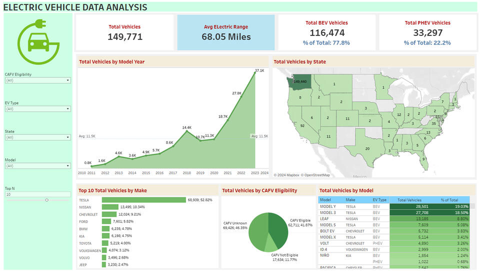

Tableau
Electric Vehicle in the US (2011-2023)

Goal
The Electric Vehicle (EV) Data Analysis Dashboard was created to visualize the adoption trends and distribution of electric vehicles across the United States. The dashboard provides key insights into the total number of electric vehicles (EVs), categorized by BEVs (Battery Electric Vehicles) and PHEVs (Plug-in Hybrid Electric Vehicles), along with state-level analysis, vehicle makes, and model details. It allows users to identify trends in vehicle registrations, top manufacturers, and vehicle models, and explore geographical adoption of EVs.
Process
The data was imported into Tableau from an external Excel file containing vehicle registration data from various states. Data cleaning was performed in Tableau Prep to handle missing values and normalize the fields such as EV type, model year, and state. Data transformation involved creating calculated fields for KPIs like total vehicles by EV type (BEV/PHEV), average electric range, and CAFV (Clean Alternative Fuel Vehicle) eligibility.
Tableau’s features were utilized to create visualizations such as line charts to track vehicle registrations over time, maps for state-level distribution, and bar charts for top manufacturers and models. Interactive filters were added for users to dynamically select by EV type, state, model year, CAFV eligibility, and top vehicle makes. The dashboard was designed with a clean and interactive user interface to help stakeholders quickly explore trends and insights related to electric vehicle adoption across the U.S.
Key Questions Answered
- How many electric vehicles are registered, and what is the breakdown between BEVs and PHEVs?
- How has electric vehicle adoption grown over time by model year?
- Which states have the highest concentrations of electric vehicles?
- What are the top vehicle makes and models in terms of registrations?
- How does CAFV eligibility impact the overall count of electric vehicles?